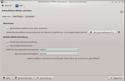

Arbeitsflächeneffekte
Dieser Artikel wurde für die folgenden Ubuntu-Versionen getestet:
Ubuntu 14.04 Trusty Tahr
 Der Fenstermanager KWin von KDE unterstützt Compositing. Es muss also nicht auf einen externen Composite-Manager wie beispielsweise Compiz zurückgegriffen werden, um (3D-)Effekte zu verwenden.
Der Fenstermanager KWin von KDE unterstützt Compositing. Es muss also nicht auf einen externen Composite-Manager wie beispielsweise Compiz zurückgegriffen werden, um (3D-)Effekte zu verwenden.
Konfiguration¶
Die Konfiguration der Arbeitsflächeneffekte wird über "Systemeinstellungen -> Arbeitsflächeneffekte" erreicht. Hier lassen sowohl die gesamten Arbeitsflächeneffekte, als auch einzelne Effekte de-/aktivieren und konfigurieren.
Effekte aktivieren/deaktivieren¶
|  |
| Einstellungsdialog |
Damit die Effekte überhaupt funktionieren, müssen die Hardware-Voraussetzungen erfüllt sein. Falls die Hardware die Composite-Effekte unterstützt, werden diese standardmäßig aktiviert.
Hinweis:
Die Arbeitsflächeneffekte lassen sich über das Tastenkürzel Alt + ⇧ + F12 temporär deaktivieren und anschließend über das gleiche Tastenkürzel wieder aktivieren. Bei Bedarf kann das Tastenkürzel angepasst werden.
Möchte man die Effekte generell abschalten oder wieder einschalten, so setzt/entfernt den Haken unter "Arbeitsflächeneffekte beim Start aktivieren" im oben genannten Konfigurationsdialog auf dem Reiter "Allgemein". Unter Umständen lassen sich die Effekte nicht aktivieren, dies kann daran liegen, dass die Grafikkarte die für die Effekte benötigten Funktionen nicht unterstützt oder die Grafikkarte den falschen bzw. falsch konfigurierten Treiber verwendet. In diesem Fall kann der allgemeine Artikel 3D-Desktop weiterhelfen. Ein anderer Grund kann sein, dass im Reiter "Erweitert" der falsche "Composit-Typ" gewählt wurde. Siehe hierzu den Abschnitt Erweiterte Einstellungen und den Artikel Desktop Effects Performance  im KDE UserBase Wiki.
im KDE UserBase Wiki.
Sobald man die Effekte aktiviert, erscheint ein Dialog, in dem man die neuen Einstellungen bestätigen muss. Erfolgt die Bestätigung nicht innerhalb von 10 Sekunden so werden die Effekte wieder deaktiviert. Somit besteht keine Gefahr, dass der Desktop nicht mehr funktioniert, wenn man die Effekte aktiviert und die Hardware diese nicht korrekt unterstützt. Des Weiteren wird Compositing bei zu schlechter Performance automatisch deaktiviert.
Effekt für den Arbeitsflächenwechsel¶
Im Reiter "Allgemein" gibt es eine Auswahlliste, um den Effekt zum Animieren des Arbeitsflächenwechsel festzulegen. Es stehen folgende Effekte zur Auswahl:
Erweiterte Einstellungen¶
Achtung!
In den erweiterten Einstellungen bitte nur Änderungen vornehmen, wenn die Standardeinstellungen nicht funktionieren. Eine falsch gesetzte Option kann zum Absturz des X-Servers führen! Standardmäßig sind die besten Einstellungen für aktuelle Grafikkarten gesetzt.
Auch hier sei auf den Artikel Desktop Effects Performance im KDE UserBase Wiki verwiesen.
Im Reiter "Erweitert" können weitere Einstellungen vorgenommen werden. Hierüber lässt sich der Composite-Typ (OpenGL oder XRender) auswählen.
Viele Effekte funktionieren nur mit OpenGL. Insbesondere alle Effekte, die 3D-Unterstützung benötigen wie die 3D-Fenstergalerie und der Desktop-Würfel. Zum Teil sind die Treiber für OpenGL auch besser optimiert als für XRender.
In den erweiterten Einstellungen lassen sich noch einige Einstellungen zu der Qualität der Effekte vornehmen. Außerdem kann man einstellen, ob die Minibilder ausgeblendeter Fenster aktuell gehalten werden.
Effekte¶
Der Konfigurationsdialog bietet eine Vorauswahl an Effekten, welche über die Auswahlhäkchen "Verbesserte Fensterverwaltung" und "Verschiedene Animationen" aktiviert werden kann. Diese sind einschließlich einiger weiterer Effekte standardmäßig aktiviert. Über den Reiter "Alle Effekte" können auch einzelne Effekte ausgewählt werden und zusätzliche Einstellungen vorgenommen werden. Nachfolgend werden die einzelnen Effekte kurz vorgestellt.
Jeder Effekt wird mit einer Kombination der folgenden Symbole gekennzeichnet. Das Symbol gibt dabei an, welches Backend (XRender oder OpenGL) den Effekt unterstützen und ob Shader Unterstützung benötigt wird.
| Symbol | Bedeutung |
| Effekt wird von XRender unterstützt. | |
| Effekt wird von OpenGL unterstützt. Falls XRender nicht gesetzt ist, wird OpenGL benötigt. | |
| Effekt benötigt OpenGL Shader Unterstützung. |
Aktivierung¶
| Aktivierung | |||
| Name | Backend | Beschreibung | Bildschirmfoto |
| Bildschirm für Systemverwaltungsmodus abdunkeln | Der Bildschirm wird abgedunkelt, sobald nach dem Passwort gefragt wird, um Administrationsrechte zu erlangen. | ||
| Eltern-Fenster abdunkeln | Dunkelt das Eltern-Fenster des aktiven Fensters ab. Dieser Effekt erleichtert zu erkennen, wenn ein Dialog-Fenster geöffnet ist, zu welcher Anwendung es gehört. | ||
| Inaktive abdunkeln | Dieser Effekt dunkelt alle inaktiven Fenster ab. Dadurch ist es einfacher zu erkennen, welches Fenster aktiv ist. | ||
| Nach hinten rutschen | Lässt Fenster nach hinten rutschen, sobald sie den Fokus verlieren. | - | |
Erscheinungsbild¶
| Erscheinungsbild | |||
| Name | Backend | Beschreibung | Bildschirmfoto |
| Abmeldung | Dieser Effekt animiert das Abmelden aus der KDE. | - | |
| Anmeldung | Dieser Effekt animiert den Start einer neuen KDE-Sitzung. | - | |
| Arbeitsfläche aus-/einblenden | Wechseln der virtuellen Arbeitsfläche durch Aus- und Einblenden der Arbeitsfläche animieren. | - | |
| Auseinanderfallen | Das Fenster fällt beim Schließen auseinander. | ||
| Bildschirmfoto | Speichert ein Bildschirmfoto des aktiven Fensters im Persönlichen Ordner. | - | |
| Bildschirmkante | Hebt die Bildschirmkante bei Annäherung hervor. | - | |
| Dashboard | Die Arbeitsfläche wird grau gefärbt, sobald das Plasma-Dashboard angezeigt wird. | ||
| Fenster hervorheben | Hebt das dazugehörige Fenster hervor, sobald sich der Mauszeiger über dem Fensterleisten-Eintrag befindet. Andere Fenster sind transparent im Hintergrund sichtbar. | ||
| Fenstergeometrie | Fenstergeometrie bei Verschieben/Größenänderung anzeigen. | ||
| Gleiten | Fenster gleiten beim Öffnen/Schließen hinein/hinaus. | - | |
| Gleiten | Dieser Effekt animiert das Wechseln der Arbeitsfläche. Der Effekt sollte über die Auswahlliste im Reiter "Allgemein" aktiviert werden. | - | |
| Hereingleitende Aufklappfenster | Plasma-Aufklappfenster gleiten hinein. | - | |
| Hineinzoomen | Dieser Effekt animiert das Erscheinen von Bildern. Das Fenster wird dabei immer größer, bis es die vollständige Größe erreicht hat. | - | |
| Kscreen | Hilfseffekt für Kscreen. | - | |
| Mausspur | Mit diesem Effekt kann man Linien auf dem Bildschirm zeichnen. Dazu hält man die Tasten
⇧ +
Windows und bewegt die Maus. Mit
⇧ +
Windows +
F12 kann man die letzte gezeichnete Linie löschen, mit
⇧ +
Windows +
F11 alle Linien. Über die Konfiguration kann man die Farbe und Breite der Linien konfigurieren. | ||
| Maximieren | Animation beim Maximieren und Wiederherstellen eines Fensters. | - | |
| Minimieren-Animation | Die Minimier-Animation kommt zum Einsatz, wenn man ein Fenster minimiert oder wiederherstellt. Dabei wird das Fenster in die Fensterleiste verschoben, wird dabei kleiner und transparent. | - | |
| Schweben | Lässt modale Dialogfenster langsam von der Titelleiste des Elternfenster herein- bzw. herausschweben. | - | |
| Seitliche Vorschaubilder | Der Seitliche-Vorschaubilder-Effekt blendet nach Drücken der Tastenkombination Windows + Strg + T ein live Vorschaubild des aktuellen Fensters am rechten Rand des Bildschirms ein. Somit kann man ein Vorschaubild für jedes Fenster am Bildschirmrand haben. Der eigentliche Nutzen und Vorteil gegenüber den Vorschaubildern in der Fensterleiste ist jedoch gering. | - | |
| Transparenz | Der Transparenz-Effekt erlaubt es, Fenster oder Bereiche von Fenstern transparent darzustellen. Dieser Effekt bietet über sein Konfigurationsmodul sehr genaue Einstellungsmöglichkeiten. So kann man z.B. für die Fensterdekorationen, für inaktive Fenster, für Dialoge etc. die Transparenz individuell einstellen. Beim Verschieben/Vergrößern eines Fensters kann ebenfalls die Transparenz festgelegt werden. | ||
| Verblassen | Der Verblassen-Effekt lässt Fenster beim Schließen völlig transparent werden und Fenster beim Öffnen von völliger Transparenz zu völlig sichtbar übergehen. Es ist eine angenehme Fenster-Öffnen/Schließen-Animation, welche standardmäßig aktiviert ist. | - | |
| Verwischen | Der Verwischen (engl. "Blur") Effekt lässt den Hintergrund eines transparenten Fensters verschwimmen. Es ist dadurch einfacher, den Inhalt des transparent dargestellten Fensters zu lesen, insbesondere wenn im Hintergrund und Vordergrund Text ist. Dieser Effekt benötigt Shader und mindestens OpenGL 2.0 und ist somit nur auf modernerer Hardware verfügbar. | ||
| Vorschaubilder in der Fensterleiste | Effekt aktiviert ist, wird in dem Hinweisfenster, welches erscheint, wenn man mit der Maus über einen Eintrag der Fensterleiste fährt, ein live Vorschaubild der Anwendung angezeigt. | ||
| Wabernde Fenster | Der Effekt "Wabernde Fenster" (engl. "Wobbly Windows") deformiert ein Fenster während des Verschiebens oder Vergrößerns. Über die Konfiguration kann man den Grad des Waberns festlegen. |  | |
| Wunderlampe | Dieser Effekt simuliert zum Minimieren von Fenstern den Effekt einer Wunderlampe. | ||
Extras¶
| Extras | |||
| Name | Backend | Beschreibung | Bildschirmfoto |
| Bilder pro Sekunde anzeigen | Dieser Effekt zeigt in der rechten oberen Ecke des Bildschirms die Anzahl der gezeichneten Bilder pro Sekunde und die aktuelle Belastung von KWin mit Hilfe verschiedener Farben und Balkengrafiken an. Der Effekt ist für den normalen Nutzer nicht wirklich interessant. | ||
| Zeichnungsbereiche hervorheben | Dieser Effekt färbt die Bereiche ein, die von KWin neu gezeichnet werden. Es wird also die komplette Arbeitsfläche eingefärbt. Dieser Effekt ist für den normalen Nutzer nicht wirklich interessant. | ||
Fensterverwaltung¶
| Fensterverwaltung | |||
| Name | Backend | Beschreibung | Bildschirmfoto |
| 3D-Fenstergalerie | Die 3D-Fenstergalerie (engl. "CoverSwitch") ist ein Effekt zum Umschalten zwischen Fenstern mittels Alt + Tab ⇆ . Der Effekt ist an den von iTunes bekannten Cover Flow Effekt angelehnt. Es wird eine Vorschau aller Fenster angezeigt, wobei alle Fenster bis auf das aktuell nicht ausgewählte gekippt dargestellt werden. Man erhält dadurch eine gute Übersicht von den Fenstern und eine angenehme Animation, welche über die Einstellungen genauer konfiguriert oder auch ausgeschaltet werden kann. | ||
| 3D-Fensterstapel | Der 3D-Fensterstapel (engl. "Flip Switch") ist ein Effekt zum Umschalten zwischen Fenstern mittels Alt + Tab ⇆ . Der Effekt ist an den von Windows Vista bekannten Flip 3D Effekt angelehnt. Die Fenster werden bei diesem Effekt hintereinander angeordnet und halbdurchsichtig dargestellt. Der Effekt bietet auch eine gute Übersicht über alle offenen Fenster, jedoch nicht so gut wie die 3D-Fenstergalerie. | ||
| Animation Arbeitsflächen-Würfel | Einstellungen zur Animation des Arbeitsflächen-Würfels | - | |
| Arbeitsflächen-Umschalter (Raster) | Der Arbeitsflächen-Umschalter (engl. Desktop Grid) bietet eine gute Übersicht über alle Arbeitsflächen und die darauf sich befindenden Fenster. Der Effekt wird über das Tastenkürzel Strg + F8 aktiviert, es kann aber auch eine aktive Bildschirmecke dem Effekt zugewiesen werden. | ||
| Arbeitsflächen-Würfel | Der Arbeitsflächen-Würfel bildet die Arbeitsflächen auf einem geometrischen Objekt ab. Im Falle von vier Arbeitsflächen ist dies ein Quader, daher die Bezeichnung Würfel. Der Effekt bietet sehr viele Einstellungsmöglichkeiten, hat jedoch sehr gute Standardeinstellungen. So wird z.B. standardmäßig die Spiegelung aktiviert, das Kubuntu Logo als Deckel angezeigt sowie der Würfel transparent dargestellt. Der Effekt kann auch verwendet werden um das Wechseln der Arbeitsfläche zu animieren, dazu sollte man die Dropdownliste im Reiter "Allgemein" verwenden. Der Würfel wird über das Tastenkürzel Strg + F11 aktiviert werden und im Reiter "Bildschirmecken" kann eine Ecke zur Aktivierung zugewiesen werden. | ||
| Fenster zeigen | Fenster zeigen (engl. "Present Windows") ist ein an den von Mac OS X bekannten Exposé Effekt angelehnter Effekt. Dieser zeigt alle geöffneten Programme nebeneinander an. Der Effekt kann über die Tastenkürzel Strg + F9 (nur Fenster der aktuellen Arbeitsfläche) und Strg + F10 (Fenster aller Arbeitsflächen) aktiviert werden. Zusätzlich wird der Effekt auch aktiviert, wenn man mit der Maus in die linke, obere Ecke des Bildschirms fährt. |  | |
| Fenstergröße ändern | Schnelles Skalieren der Fenster-Texturen ohne Aktualisierung des Fensterinhalts. | ||
Optik¶
| Optik | |||
| Name | Backend | Beschreibung | Bildschirmfoto |
| Programmstartanzeige | Hilfseffekt für die Programmstartanzeige. | - | |
Zugangshilfen¶
| Zugangshilfen | |||
| Name | Backend | Beschreibung | Bildschirmfoto |
| Animation für Mausklicks | Erzeugt bei jedem Mausklick eine Animation. Dies ist sinnvoll für Bildschirmaufnahmen oder Präsentationen. | ||
| Arbeitsflächen-Vergrößerung | Dieser Effekt vergrößert die komplette Arbeitsfläche. Es wird also nur noch ein Bereich der Arbeitsfläche vergrößert gezeigt. | - | |
| Bildschirmlupe | Dieser Effekt vergrößert die Arbeitsfläche in einer "looking glass" Art und Weise. Es sieht so aus, als ob eine Kugel unter der Arbeitsfläche platziert wäre. Leider sind die Tastenkürzel zum Vergrößern auf der deutschen Tastatur nicht greifbar und müssen daher manuell angepasst werden. Dieser Effekt benötigt Shader und mindestens OpenGL 2.0 und ist somit nur auf modernerer Hardware verfügbar. | ||
| Einrasthilfe | Zeigt beim Verschieben von Fenstern eine Hilfestellung zum Auffinden der Bildschirmmitte an. | ||
| Invertieren | Dieser Effekt invertiert die Farben des Bildschirms. Dazu muss man Strg + Windows + I drücken. Mit der selben Tastenkombination stellt man das ursprüngliche Bild wieder her. Dieser Effekt benötigt Shader und mindestens OpenGL 2.0 und ist somit nur auf modernerer Hardware verfügbar. | ||
| Lupe | Dieser Effekt stellt eine Lupe zur Verfügung. Der Bereich unter dem Mauszeiger wird vergrößert in einer Lupe dargestellt. Leider sind die Tastenkürzel zum Vergrößern auf der deutschen Tastatur nicht greifbar und müssen daher manuell angepasst werden. | ||
| Maus-Position finden | Dieser Effekt hilft beim Gedrückt-Halten der Tasten Strg + Windows die Mausposition zu finden. Um den Mauszeiger herum bewegen sich einige Sterne im Kreis. | ||
 Übersichtsartikel
Übersichtsartikel- Erstellt mit Inyoka
-
 2004 – 2017 ubuntuusers.de • Einige Rechte vorbehalten
2004 – 2017 ubuntuusers.de • Einige Rechte vorbehalten
Lizenz • Kontakt • Datenschutz • Impressum • Serverstatus -
Serverhousing gespendet von